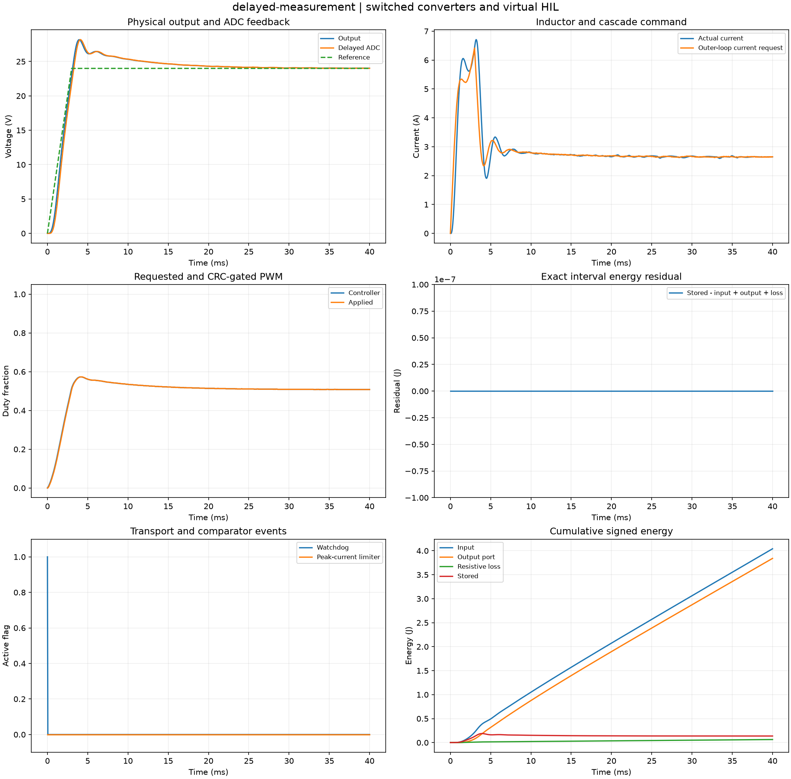

Reproducible switched converters and virtual HIL. Units and field components are printed on the scientific axes. peak d-q quantities use exp(+i omega t); terminal currents point into the protected line.
Sealed numeric archive | Summary CSV | Physical parameters | Run request | Source and environment

| accepted_packets | 799 |
|---|---|
| dropped_packets | 0 |
| final_output_v | 24.02378286343609 |
| limited_cycles | 0 |
| max_energy_residual_j | 1.2961853812498703e-14 |
| maximum_recorded_current_a | 9.430571273285661 |
| minimum_recorded_current_a | 0.0 |
| peak_inductor_a | 9.430571273285661 |
| rejected_packets | 0 |
| terminal_tracking_rms_v | 0.028112905641139503 |
| watchdog_cycles | 1 |
These are simulations, not hardware measurements. Network-model, measurement, timing and statistical uncertainty require distinct convergence checks. Singular or unilluminated data use explicit masks.
Source revision: b037b9bac4fb91b47282a5f1fd30d5a00f340256.
Dirty checkout: False.
Configuration SHA-256: 6a3df8a330ab0bf80927b0abb9bdcedafa177f9a9e47f2de6e414d9f2570004e.
Replay preserves original source and parameter provenance. SHA-256 manifests detect changed bytes; they are unsigned integrity records, not certificates of physical validity.